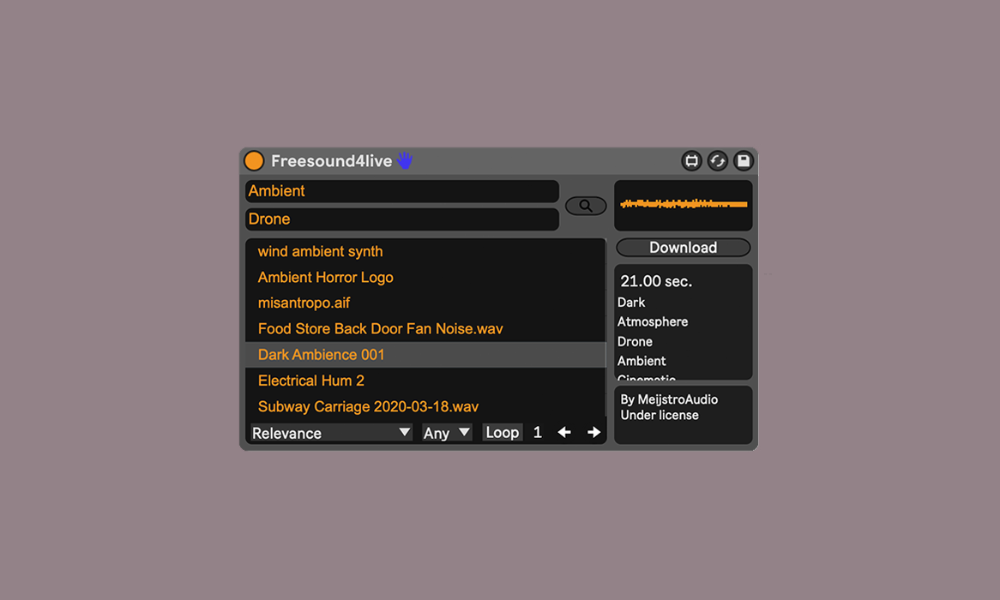
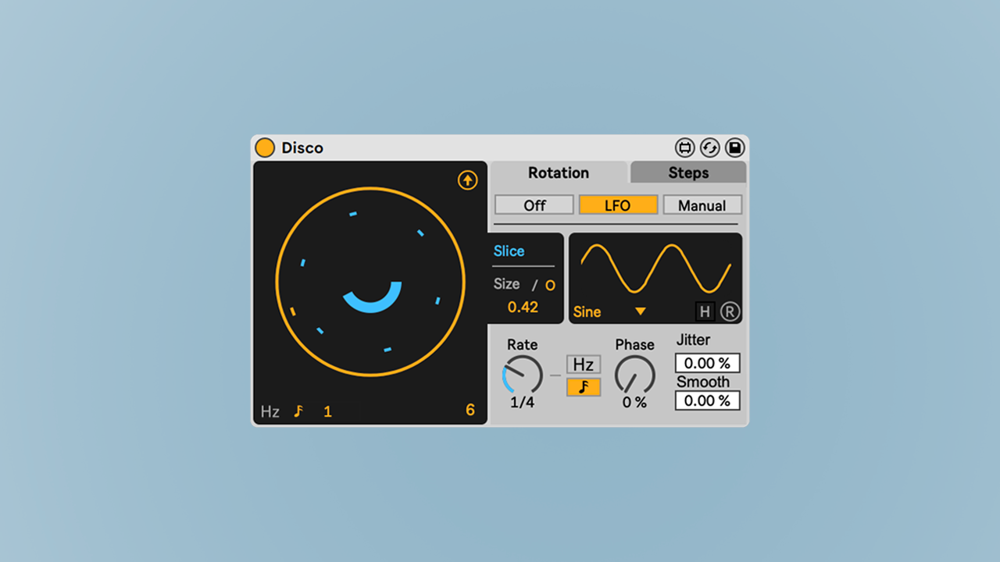
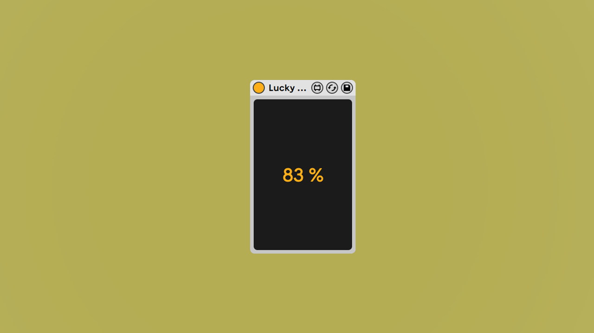

Freesound4Live
Browse, search, listen and download sounds from Freesound.org without leaving Ableton Live
availabe on:
->Gumroad
->Isotonik Studios
Disco
 Disco is a circular Euclidian delay, where every delay line can rotate around making interesting delay artifacts! The signal is splitted in different delay lines that can rotate together or independently, speeding and slowing down the audio signal. Use it as a simple Euclidian delay, spin it for crazy effects or just add a little bit of movement to your sound! Possibilities are many, so have fun!availabe on:
->Gumroad
->Isotonik Studios
Lucky Notes
Let a certain percentage of MIDI notes to pass through
availabe on: